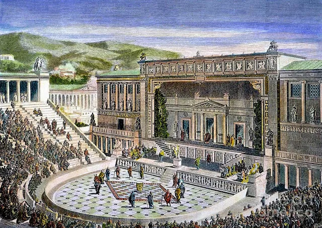

1 . Grécia Antiga (V a.C.):
O teatro surge com as representações em honra a Dionísio, deus do vinho e da fertilidade. As primeiras peças eram corais e, com o tempo, surgiram atores que interagiam com o coro.
Épocas importantes: A tragédia (com dramaturgos como Ésquilo, Sófocles e Eurípides) e a comédia (com Aristófanes).
O teatro grego influenciou profundamente as formas teatrais ocidentais, incluindo a estrutura das peças e o uso de máscaras.
2 . Roma Antiga (séculos I a.C. - V d.C.):
Os romanos adaptaram o teatro grego, mas com ênfase maior em comédias e espetáculos mais populares. O dramaturgo Plauto foi um exemplo de grande sucesso.
O teatro romano foi marcado também por lutas e grandes espetáculos nos anfiteatros.
3 . Idade Média (séculos V - XV):
O teatro medieval começou com peças religiosas, muitas vezes encenadas nas igrejas para ensinar a fé cristã. Com o tempo, surgiram os mistérios e as moralidades, representações alegóricas que envolviam temas morais e religiosos.
A Igreja Católica teve grande influência na censura e na definição do conteúdo teatral da época.
4 . Renascimento (séculos XIV - XVII):
O teatro renascentista reviviu as formas gregas e romanas, com dramaturgos como Shakespeare na Inglaterra e Molière na França, que influenciaram profundamente o drama, a comédia e a tragédia.
Os palcos passaram a ser mais sofisticados, e o teatro se tornou uma forma popular de entretenimento.
5 . Barroco e Iluminismo (séculos XVII - XVIII):
A dramaturgia continuou a evoluir, com obras mais complexas e explorando temas como o poder, a razão e a moralidade.
O teatro francês com Molière e Corneille foi particularmente influente, enquanto na Inglaterra os teatros públicos como o Globo de Shakespeare continuaram a florescer.
6 . Séculos XIX e XX:
Com a Revolução Industrial e o desenvolvimento de novos meios de comunicação, o teatro passou por mudanças significativas. Surgiram movimentos como o romantismo, o realismo e o teatro moderno.
O teatro moderno (com nomes como Ibsen, Chekhov e Stanislavski) introduziu novas formas de interpretação e foco em questões sociais e psicológicas.
No século XX, o teatro do absurdo, com autores como Samuel Beckett, e o teatro político, com Bertolt Brecht, marcaram a cena teatral.
Hoje, o teatro continua a se reinventar, incorporando novas tecnologias, formas de expressão e abordagens experimentais. A história do teatro reflete não só mudanças artísticas, mas também sociais, culturais e políticas ao longo do tempo.